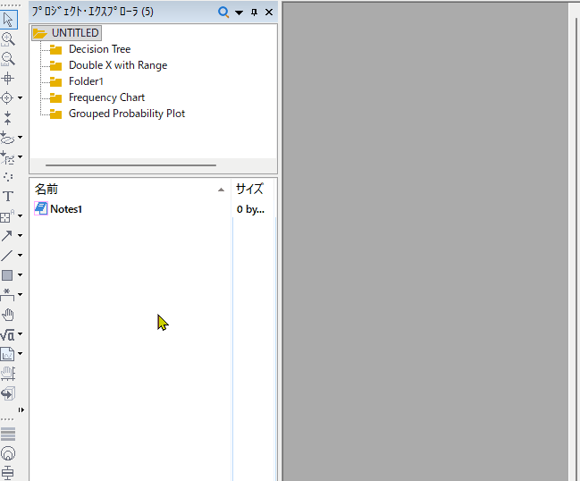

FAQ-1232 プロジェクト内の複数のフォルダを削除する方法は？
Delete-Multi-Folder
最終更新日：2025/12/23
- プロジェクトエクスプローラで、下部パネルの空の領域を右クリックし、フォルダ表示メニューを選択します。
- 上部パネルでルートフォルダを選択します。
- Ctrlキーを押しながらクリック（個々のアイテムを選択する場合）、またはShiftキーを押しながらクリック（連続するアイテムの範囲を選択する場合）を使用して、削除するフォルダーを選択します。
- 選択したものの上で右クリックして、フォルダの削除をクリックします。

キーワード:フォルダの削除、複数のフォルダの選択